Puzzle Mix: Exploiting Saliency and Local Statistics for Optimal Mixup
August 27, 2020

Deep neural networks become the bedrock of modern AI tasks such as object recognition, speech, natural language processing, and reinforcement learning. However, these models are known to memorize the training data and make overconfident predictions often resulting in degraded generalization performance on test examples [Zhang2016]. Data augmentation approaches aim to alleviate some of these issues by improving the model generalization performance [Bishop 2006].
Recently, a line of new data augmentation techniques called mixup has been proposed [Zhang2018]. These methods mainly focus on creating previously unseen virtual mixup examples by interpolating a pair of given data. In this article, we will cover these methods with our paper “Puzzle Mix: Exploiting Saliency and Local Statistics for Optimal mixup”.
Mixup
Mixup mainly targets to alleviate the over-confidence issue of deep neural networks [Zhang2018]. The general neural networks trained by empirical risk minimization has high prediction probabilities even for the unseen inputs or wrong predictions. Zhang et al. proposed to train networks with convex combinations of data. Specifically, for the given input and label pairs \((x_1, y_1)\) and \((x_2, y_2)\), mixup generates
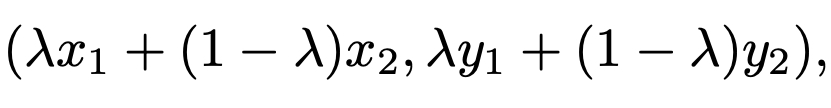
for a mixing ratio \(\lambda\) in \([0, 1]\). By training networks with mixup data, we can improve the networks' generalization performance on various tasks, including image classification and speech recognition. In addition, mixup improves the adversarial robustness of the networks and stabilizes the training of networks.
Following the firstly suggested mixup technique, called input mixup, various variants are suggested. Verma et al. proposed manifold mixup [Verma2019], which performs input mixup with the hidden representation of data, and Yun et al. proposed CutMix [Yun2019] performing cut-and-paste of a rectangular box of an image.
.jpg)
Image samples of existing mixup methods. Input mixup does not preserve local statistics (e.g., color), and CutMix does not preserve salient information.
However, the existing mixup methods lack some considerations and can give false supervisory signals to the networks. For example, input mixup does not preserve color information of data, and CutMix can delete informative regions of data. The proposed Puzzle Mix overcomes these issues by considering saliency and local statistics of data.
Puzzle Mix
Puzzle Mix performs mixup by masking each input and transport salient regions of inputs over masks. The following is an image sample of Puzzle Mix.
.jpg)
Puzzle Mix image sample.
Formally, for given \(n\)-dimensional data \(x_1\) and \(x_2\), our mixup formula is as follows:
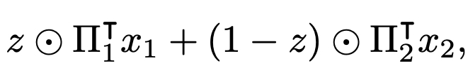
where \(z\) is a \(n\)-dimensional mask having values in \([0, 1]\), and \(\Pi_k\) is a transportation plan which is a \(n \times n\) binary matrix. Our main objective is to optimize the mask \(z\) and the transportation plans maximizing salient information of each data while preserving local statistics. Before we move onto the detailed description of our objective, we briefly introduce the effects of Puzzle Mix.
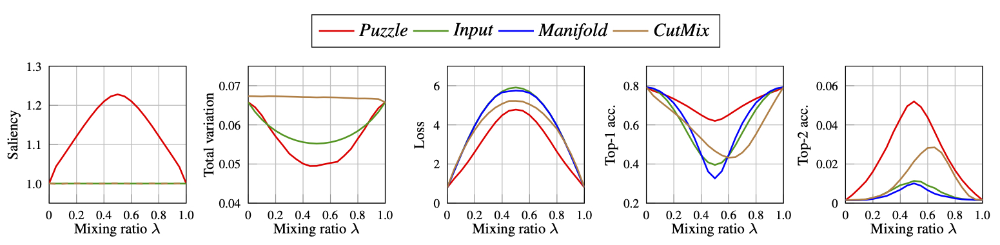
Statistics of various mixup data along mixing ratios in \([0,1]\). Saliency represents remained saliency information in the mixed data. Total variation is measured in each mixup data. Loss means cross-entropy loss of the pretrained model on mixup data and Top-k acc. means the prediction accuracy of the model on the mixup data.
As we can see from the above figure, Puzzle Mix data preserves saliency information (Saliency) while preserving local statistics (Total variation). Consequently, the Puzzle Mix data is more consistent with the target soft label than other mixup methods (Loss, Top-k acc.).
Objective and Algorithm
As we mentioned, our objective is to find optimal mask and transportation plans maximizing saliency while maintaining local statistics. To solve the problem, we first discretize the mask value, and we denote the discretized range as \(\mathcal{L}\). For a given saliency map \(s_k\) of each data, we solve the following optimization problem to obtain the optimal mask and transportation plans.
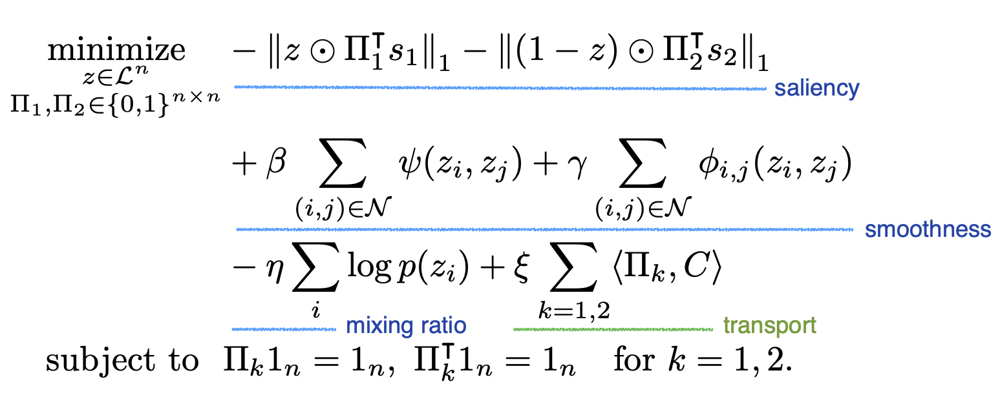
The first term of the objective represents the negative of remained saliency information. The next term is a penalty for local statistics, \(\psi\) for the smoothness of the mask labels and \(\phi\) for the smoothness of the mixup data.
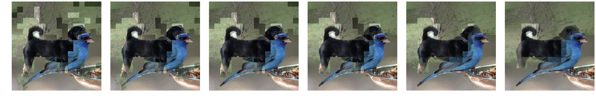
Puzzle Mix images with increasing smoothness coefficient \(\beta\) and \(\gamma\).
We also introduce a prior term \(p\) to control the mixing ratio of inputs.
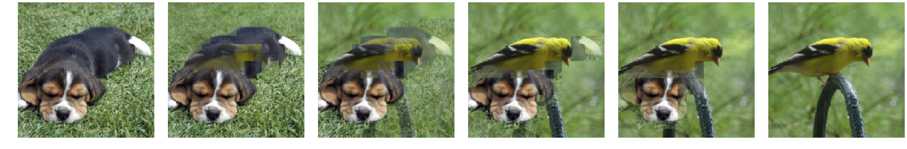
Puzzle Mix images with increasing mixing ratio \(\lambda\).
Finally, we penalize the transport cost to preserve local statistics of data. To solve the minimization problem, we propose an alternating algorithm between a mask \(z\) and transportation plans.
1) Optimize Mask
The terms related to a mask are the saliency, smoothness, and mixing ratio prior terms. We can represent the \(\ell_1\) norm in the saliency term as a unary term \(u_i\), and the objective with respect to a mask is represented as follows:
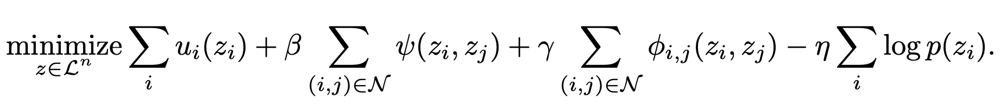
We define the pairwise smoothness terms as submodular functions and apply a submodular minimization algorithm, alpha-beta swap [Boykov2001], to obtain the optimal mask \(z\).
2) Optimize Transportation Plan
The objective with respect to transportation plans becomes
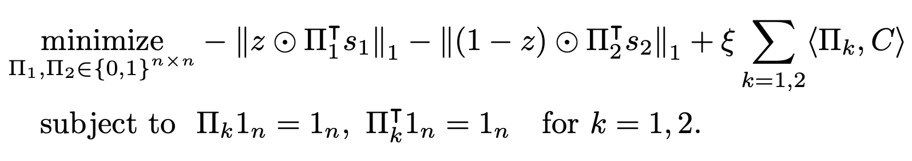
Note that, the above problem is separable for each transportation plan \(\Pi_k\), and we perform the optimization independently for each index. We propose a GPU based algorithm to obtain the optimal transportation plans, and please refer to our paper for a detailed description of the algorithm.
3) Adversarial Training and Regularization
We obtain the saliency map \(s_k\) by calculating the gradients of loss with respect to inputs and taking \(\ell_2\) norm across the input channels. We utilize gradient information to improve the Puzzle Mix training algorithm. First, we propose an adversarial training with mixup data by adding the adversarial perturbation on each input before mixup. Second, we regularize the training objective by using the gradient information with respect to the network weights on clean input data:
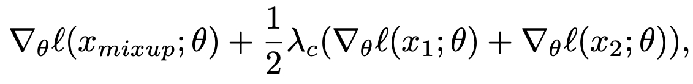
where \(\ell\) is a training objective, and \(\theta\) represents the network weights.
Experimental Results
We test the proposed Puzzle Mix on the image classification task. In this article, we provide the results on CIFAR-100 with PreActResNet-18 and ImageNet with ResNet-50.
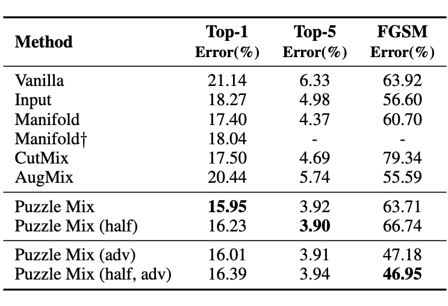
Performance on CIFAR-100 with PreActResNet-18. Note, half represents the model trained with the same number of network forward calls and adv represents the adversarially trained model.
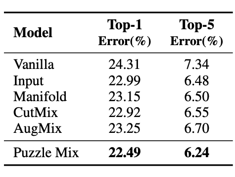
Performance on ImageNet with PreActResNet-18.
As we can see from the above tables, Puzzle Mix outperforms mixup baselines at generalization and adversarial robustness at the same time with a large margin on various datasets and models.
Conclusion
In the paper, we presented Puzzle Mix, a mixup augmentation method for optimally leveraging the saliency information while respecting the underlying local statistics of the data. Puzzle Mix outperforms other mixup baseline methods both in the generalization performance and the robustness against adversarial perturbations by a large margin on various datasets. We believe Puzzle Mix will guide interesting future research, such as replacing the transport process or optimizing what to mix.
Citation
@inproceedings{kimICML20,
title= {Puzzle Mix: Exploiting Saliency and Local Statistics for Optimal Mixup},
author = {Kim, Jang-Hyun and Choo, Wonho and Song, Hyun Oh},
booktitle = {International Conference on Machine Learning (ICML)},
year = {2020}
}Open Source Code
https://github.com/snu-mllab/PuzzleMix
Reference
[Bishop2006] Pattern recognition and machine learning. springer, 2006.
[Boykov2001] Fast approximate energy minimization via graph cuts. IEEE Transactions on pattern analysis and machine intelligence, 23(11): 1222–1239, 2001.
[Verma2019] Manifold Mixup: Better Representations by Interpolating Hidden States. ICML, 2019.
[Yun2019] CutMix: Regularization Strategy to Train Strong Classifiers with Localizable Features. ICCV, 2019.
[Zhang2016] Understanding deep learning requires rethinking generalization. ICLR, 2016.
[Zhang2018] mixup: Beyond empirical risk minimization. ICLR, 2018.